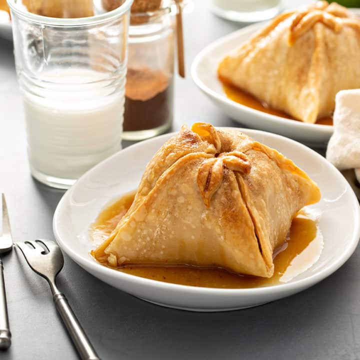

Apple dumpling is an American dessert consisting of a dumpling filled with apples, butter, sugar, cinnamon, and sometimes raisins. The dish is traditionally baked until it develops a tender texture, and it is often served with a scoop of vanilla ice cream on the side. Today, the dessert is especially popular in the Pennsylvania region.
Meal prep time : 1 hour 30 minutes
Servings : 6